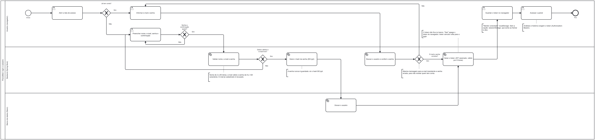
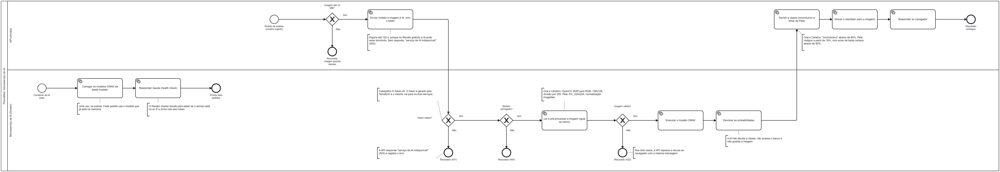

Workflows BPMN 2.0, justificativa técnica e análise de ética, governança e segurança do protótipo de classificação de imagens de câncer.
A leitura de imagens médicas é uma etapa demorada da triagem de câncer, e a fila de exames depende da disponibilidade de especialistas. Redes neurais treinadas com imagens públicas conseguem separar padrões visuais de algumas lesões, mas um número alto de acurácia sozinho não diz se o modelo serve para pacientes reais.
O PixoraMed é um protótipo que classifica imagens de três tipos de câncer e mostra, no mesmo site, o resultado de cada análise e o desempenho medido de cada modelo, com os limites dessa medida:
| Módulo | Tipo de imagem | Classes | Dataset |
|---|---|---|---|
| Pele | Dermatoscopia, colorida | benigno, maligno | HAM10000 |
| Oral | Histopatologia, colorida | normal, carcinoma espinocelular (SCC) | Multi Cancer |
| Cérebro | Ressonância magnética, tons de cinza | glioma, meningioma, hipofisário | Multi Cancer |
Entregar um fluxo completo e funcional, do treino dos modelos à interface, que mostre como um sistema de apoio à triagem poderia funcionar e, ao mesmo tempo, deixe claro onde ele falha. O sistema permite:
O cenário pensado é o de um médico que já sabe qual exame tem em mãos e quer uma segunda leitura rápida para priorizar casos. O ganho de tempo é hipotético: os datasets usados têm licença não comercial, o protótipo não foi validado clinicamente e por isso não calculamos retorno financeiro.
Os três processos foram modelados em BPMN 2.0 e estão em
docs/bpmn/ como arquivos .bpmn, que abrem no
bpmn.io e no Camunda Modeler, e como imagens .png. Os
diagramas são gerados por código
(docs/bpmn/generator/generate.py), o que mantém as etapas
iguais ao que o sistema faz de verdade: quando o código muda, o processo
é atualizado e exportado de novo.
| Workflow | Raias | O que mostra |
|---|---|---|
| 1. Login e cadastro | Usuário, Backend, Banco | Cadastro com validação, hash BCrypt da senha e emissão do token JWT |
| 2. Microsserviço de IA | Backend, ai-service | Subida do serviço, token interno, validações e quem decide a classe |
| 3. Uso do sistema | Usuário, Sistema, IA | Uma análise completa, do módulo escolhido até o resultado com avisos |
O workflow 3 começa com o usuário já logado, como pedido pelo orientador; o login fica todo no workflow 1. As anotações de texto dentro dos diagramas registram as regras de negócio (limites, mensagens de erro, o que é ou não gravado), para que o processo possa ser lido sem o código.
As próximas três páginas trazem cada diagrama em página horizontal, seguido das decisões que ele documenta.

localStorage; sem
a opção, no sessionStorage, que some ao fechar a aba.
Authorization: Bearer.

/health é a única rota sem token, usada pelo Render
para saber se o serviço está no ar.
X-Internal-Token. Token inválido: 401;
modelo desconhecido: 404; imagem ilegível: 422.
O sistema tem três serviços independentes, cada um na própria pasta do
repositório, com Dockerfile, README, arquivo .env.example e
documentação de arquitetura:
/api no próprio domínio.
/api/* configurado no vercel.json
users,
trainings e predictions.
X-Internal-Token
Por que separar a IA do backend. Os modelos e as bibliotecas de visão (OpenCV, ONNX Runtime) somam quase toda a memória e o tamanho da imagem Docker. Num serviço próprio, a IA pode ser atualizada, escalada ou trocada sem mexer no login nem no banco, e não tem acesso a nenhum dado de usuário: recebe uma imagem e devolve números.
Por que a regra de decisão fica no backend. Limiar de
inconclusivo, limiar da Pele e o que é gravado são regras de negócio,
que mudam com mais frequência que o modelo. Ficando no backend, elas são
configuráveis por variável de ambiente
(INCONCLUSIVE_THRESHOLD) e cobertas por testes
automatizados, e o frontend não tem regra nenhuma nem segredo nenhum.
Por que o site chama /api no próprio domínio. O
rewrite da Vercel repassa as chamadas ao backend. O navegador não
precisa saber onde o backend está, não há variável de ambiente com
endereço no frontend, e o mesmo código funciona no desenvolvimento
local, onde o Vite faz o repasse.
| Camada | Tecnologia | Motivo |
|---|---|---|
| Frontend | React 19, Vite, React Router, TanStack Query, Recharts | Componentes reaproveitados entre as telas; TanStack Query cuida de cache, carregamento e erro das chamadas; telas internas carregadas sob demanda (pacote principal de 774 KB para 320 KB). |
| Backend | Java 21, Spring Boot 4, Spring Data JPA, Spring Security, Maven | Padrão de mercado para APIs com camadas (controller, service, repository); Spring Security já traz BCrypt e validação de JWT, sem código de criptografia próprio. |
| IA | Python 3.12, FastAPI, ONNX Runtime, OpenCV, Pillow | Os modelos foram treinados em PyTorch e exportados para ONNX: o serviço roda sem o PyTorch, com imagem menor e inferência rápida em CPU. |
| Banco | PostgreSQL (Neon na nuvem, container no local) | Banco relacional para dados estruturados (usuários, treinos, análises); Neon tem plano gratuito sem cartão. |
| Infra | Docker Compose, Terraform | Compose sobe os quatro serviços no notebook com um comando; Terraform descreve a nuvem como código (seção 3.6). |
| Hospedagem | Vercel, Render, Neon |
Planos gratuitos que aceitam Docker e deploy automático a cada push
na branch main.
|
training-results.csv, 29
execuções) entra no backend e é importada para a tabela
trainings toda vez que o backend sobe. A importação é
idempotente: compara pela chave data/hora + dataset e insere só as
linhas novas.
| Módulo | Modelo | Entrada | Decisão |
|---|---|---|---|
| Pele | Ensemble de 5 EfficientNet-B0, calibração de Platt (~80 MB) | 224×224, cor, normalização ImageNet | maligno a partir de 18%; aviso abaixo de 80% |
| Oral | CNN pequena, ~24 mil parâmetros (~110 KB) | 128×128, cor, /255 | inconclusivo abaixo de 80% |
| Cérebro | CNN pequena, ~24 mil parâmetros (~110 KB) | 128×128, cinza, /255 | inconclusivo abaixo de 80% |
A CNN de Oral e Cérebro tem 3 blocos convolucionais (16, 32 e 64 filtros), pooling adaptativo, dropout de 0,25 e uma camada linear; treino com Adam (taxa 0,001), lote 64 e validação cruzada estratificada em 5 folds com semente fixa. Uma rede pequena foi suficiente nesses dois datasets e roda em ~0,1 a 0,2 s numa fração de CPU.
Na Pele, o limiar baixo (18%) foi escolhido para errar menos casos malignos, ao custo de mais alarmes falsos, o que faz sentido numa triagem. Na Oral e no Cérebro, o limiar de 80% troca algumas respostas por "inconclusivo" para reduzir erros de baixa confiança.
| Módulo | Teste | Resultado | Observação |
|---|---|---|---|
| Oral | 200 imagens separadas, mesma fonte | 96,5% (193/200) | Com o limiar: 188 conclusivas, 98,4% de acerto |
| Cérebro | 300 imagens separadas, mesma fonte | 98,3% (295/300) | Com o limiar: 297 conclusivas, 99,0% de acerto |
| Cérebro | 5 folds, 1.000 imagens por classe | 95,17% ± 0,55 | Cinza sem normalização (a melhor das 4 configurações) |
| Pele | Reprodução do treino, 1.915 imagens, divisão por lesão | AUC 0,939 | IC 0,922–0,954; sensibilidade 89,0%; especificidade 83,7%; VPP 51,2% |
| Pele | Modelo do app, 21 imagens internas | 8/8 malignos, 7/13 benignos | Os 6 alarmes falsos receberam aviso; amostra pequena |
Tempo por previsão no ai-service (container de 512 MB, 0,1 CPU): Cérebro 0,1 s, Oral 0,2 s, Pele 1,7 s.
infra/docker-compose.yml):
ambiente local com banco, IA, backend e frontend numa rede interna. As
portas abrem só em 127.0.0.1, o ai-service não expõe
porta e cada serviço espera o anterior ficar saudável. Serve também de
plano B se a internet falhar na apresentação.
infra/terraform): descreve o projeto da
Vercel, os dois serviços do Render com suas variáveis e o banco do
Neon, com versões de provider fixas. O banco tem
prevent_destroy, que impede apagá-lo por engano. O token
interno e o segredo do JWT são gerados pelo próprio Terraform, e
nenhum valor secreto está escrito nos arquivos .tf.
fmt, validate e
plan sem mudanças pendentes depois do deploy.
docs/glossary.md; README e documentação de arquitetura em
cada pasta.
lesion_id, para que fotos da mesma lesão não fiquem no
treino e no teste. A separação não é por paciente.
predictions guarda só usuário, modelo, classe,
confiança, tempo e horário.
| Ponto | Como foi tratado |
|---|---|
| Senhas | Hash BCrypt (Spring Security); a senha em texto não é gravada nem registrada em log. |
| Sessão | JWT assinado (HS256) com validade de 8 horas; segredo de pelo menos 32 caracteres, sem o qual o backend não sobe. |
| Enumeração de contas | Mesma mensagem de erro para e-mail inexistente e senha errada. |
| Comunicação entre serviços |
O ai-service só aceita pedidos com o X-Internal-Token,
comparado em tempo constante; o token é obrigatório para o serviço
subir.
|
| CORS |
O backend aceita só a origem do site configurada em
CORS_ALLOWED_ORIGINS.
|
| Uploads | Limite de 10 MB no navegador, no backend e no ai-service; imagem ilegível é recusada antes de rodar o modelo e, na Pele, também a imagem com lado menor que 100 px. |
| Segredos |
Nenhuma senha no código: tudo vem de variáveis de ambiente. Os
arquivos .env, terraform.tfvars e
terraform.tfstate ficam fora do git; variáveis do
Terraform marcadas como sensitive.
|
| Erros |
Toda resposta de erro sai como {"message": "..."}, sem
rastro de pilha nem detalhes internos.
|
| Log e rastreabilidade | O backend registra cadastros, logins aceitos e recusados e cada análise (concluída ou não). O usuário aparece só pelo id: e-mail, senha, token e imagem nunca vão para o log. |
| Containers |
Usuário sem privilégios; no compose, portas só em
127.0.0.1 e o ai-service sem porta exposta.
|
Os dois datasets usam a licença CC BY-NC-SA 4.0: crédito obrigatório, sem uso comercial e mesma licença para derivados. O crédito aparece no site, no README e neste documento (seção 6). As imagens não estão no repositório. A licença é também o motivo de o projeto não estimar retorno comercial.
| Risco | Mitigação atual | O que ainda falta |
|---|---|---|
| Usuário tratar o resultado como diagnóstico | Avisos em todas as telas de análise, página de limitações, inconclusivo e baixa certeza | Validação clínica antes de qualquer uso real |
| Imagem fora do domínio recebe classe com confiança alta | Limitação documentada; limiar de 80% em Oral e Cérebro | Filtro que recuse imagens incompatíveis |
| Acurácia inflada por vazamento | "Possível vazamento" escrito no site; divisão por lesão na Pele | Teste com imagens de outra fonte |
| Tentativas repetidas de login | Senhas com hash BCrypt, que torna cada tentativa mais lenta; logins recusados ficam registrados no log | Limite de tentativas por IP ou conta |
| Token roubado no navegador | Validade de 8 horas; React escapa os textos exibidos | Revogação de token e cookies HttpOnly |
| Perda do state do Terraform | Backup fora do repositório | State remoto com criptografia |
O PixoraMed entrega o caminho completo de um sistema de IA aplicado a imagens médicas: modelos treinados e avaliados com validação cruzada, um microsserviço de inferência em Docker, um backend com login seguro e regras de decisão testadas, uma interface simples pensada para o médico, com resultado, avisos e histórico, e a infraestrutura descrita como código. Os três processos principais estão modelados em BPMN 2.0 e batem com o que o código faz.
O principal resultado, além do protótipo funcionando, é a leitura honesta dos números: acurácias acima de 95% na mesma fonte convivem com quedas fortes em imagens de outra origem, e o sistema foi desenhado para mostrar essa incerteza em vez de escondê-la.
Repositório do sistema: github.com/joaopgf/PixoraMed. Notebooks de treino: github.com/joaopgf/Projeto-ML-Cancer.